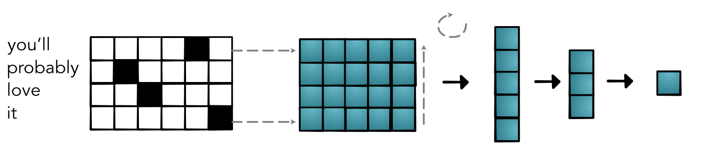

Machine Learning Engineering
Lecture 15
Sentence Classification
Today's Class
Review: Training
Simple NLP
Train / Test
Training
Parameter Fitting
Compute the loss function, \(L(w_1, w_2, b)\)
See how small changes would change the loss
Update to parameters to locally reduce the loss
Batching

Loss
Step 3 Compute Loss
out = model.forward(X).view(data.N)
loss = -((out * y) + (out - 1.0) * (y - 1.0)).log()Compute Derivatives
Step 2
loss.sum().backward()
print(model.layer1.weight.value.grad)
Update Parameters
Step 3
for p in model.parameters():
if p.value.grad is not None:
p.update(p.value - RATE * (p.value.grad / float(data.N)))Lecture Quiz
Simple NLP
Context
What are dimensions for?
What does broadcasting buy us?
What are non-spatial dimensions for?
Natural Language Processing
Systems for human language
Broad area of study with lots of challenges
Heavily uses ML, more in recent years
Sentiment Classification
Canonical sentence classification problem
Given sentence predict sentiment class
Key aspects: word polarity
Data


Problem Setup
Training: Exactly the same as simple
Loss: Exactly the same as simple
Models: Mostly similar to the simple problem.
Modeling Challenges
Converting words to tensors
Converting sentences to tensors
Handling word combinations
Word -> Tensors
What is a word?
Treat words as index in vocabulary
Represent as a one-hot vector
Challenge1: Vector Form

One-Hot Issue
Tens of thousands of words
Opposite problem as before, 2-features to 10,000
``Embedding'' represent high-dim space in low dim
Embedding Table

Intuition: Lookup in Table
Get word vector
embeddings[word]Challenge: How to compute backward
Alternative: Lookup by broadcast
Get word vector
(embeddings * word_one_hot.view(VOCAB, 1)).sum(0)Embedding One

How does this share information?
Similar words have similar embedding dim
Dot-product - easy way to tell similarity
(word_emb1 * word_emb2).sum()Differentiable!
Embedding Layer
Easy to write as a layer
class Embedding(minitorch.Module):
def __init__(self, vocab_size, emb_size):
super().__init__()
self.weights = \
minitorch.Parameter(minitorch.rand((vocab_size, emb_size))
self.vocab_size = vocab_size
def forward(input):
return (self.weights.values * input.view(self.vocab_size, 1)).sum(0)Where do these come from?
Trained from a different model
Extracted and posted to use
(Many more details in NLP class)
Examples
Embeddings
embedding.weights.value.update(pretrained_weights)Examples
Query 1
^(lisbon|portugal|america|washington|rome|athens|london|england|greece|italy)$Query 2
^(doctor|patient|lawyer|client|clerk|customer|author|reader)$Challenge 2 : Sentence Length
Sentence Length
Examples may be of different length
Need to all be converted to vectors and utilized
Challenge: Length Dimension

Value Transformation
batch x length x vocab
batch x length x feature
batch x feature
batch x hidden
batch
Network

Reduction / "Pooling"

Benefits
Extremely simple
Embeddings encode key information
Have all the tools we need
Full Model
Issues
Completely ignores relative order
Completley ignores absolute order
Embeddings for all words, even rare ones